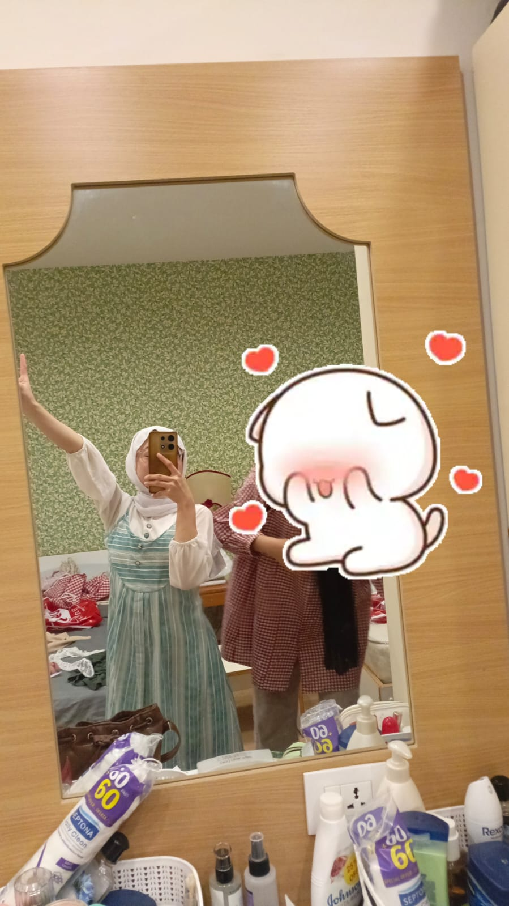
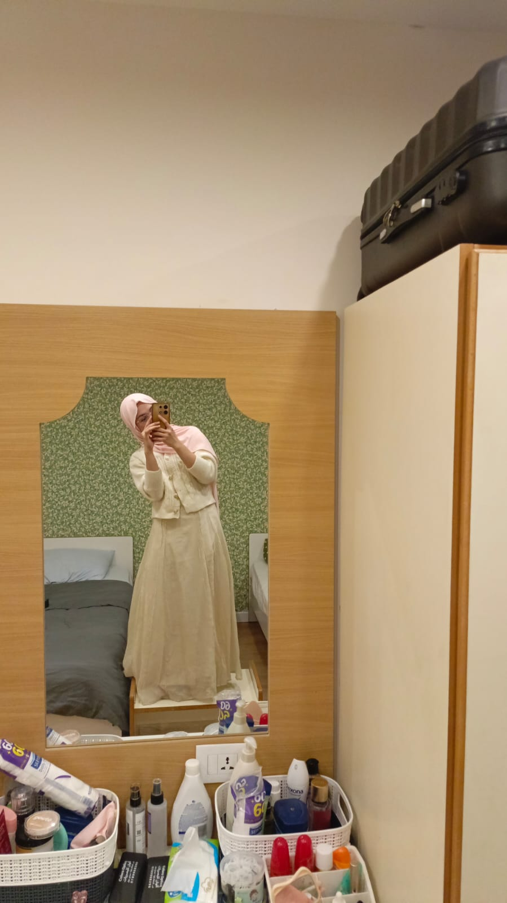
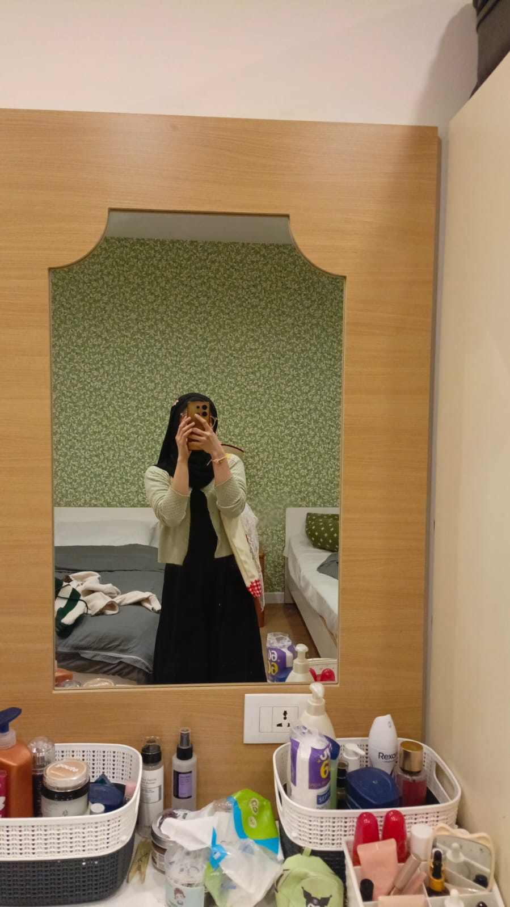
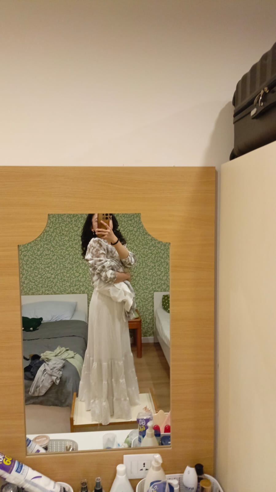

Untukmu, di Hari Ini
Surat Cinta
This Is Why I Love You




Alasan Kenapa Aku Sayang Kamu
Sudah Sejauh Ini Kita Berjalan
Terhitung sejak hari jadian kita
0
Tahun
0
Bulan
0
Hari
0
Jam
0
Menit
0
Detik
Sampai Kapan Pun
Terima kasih sudah hadir dalam hidupku. Semoga hari ini menjadi salah satu hari terindah dalam hidupmu. Aku sayang kamu, sekarang, besok, dan selamanya ❤️
— Selalu milikmu